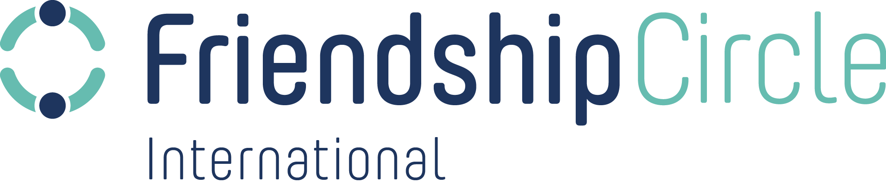

No resources found
Try selecting a different category above.

Free, ready-to-use resources to help every shul, school, campus, and home include people of all abilities.
ShabbaTTogether was created by the Chabad Ruderman Inclusion Initiative, a project of Machne Israel in partnership with the Ruderman Family Foundation. Now led by Friendship Circle International, these guides, sermons, activities, and tools have helped hundreds of communities take meaningful steps toward inclusion.
"Every single person contains an entire world.
To welcome one person is to welcome an entire world."
Inspired by Sanhedrin 4:5 — The foundation of ShabbaTTogether
Everything you need to bring inclusion into your community, organized by audience and ready to use this Shabbat.
Ready-to-deliver sermons connecting Torah wisdom to disability inclusion, mental health awareness, and the value of every person. Perfect for Shabbat, Purim, and year-round.
Playbooks for Shluchim, campus leaders, and families on supporting mental health. Includes crisis guidance, resource handouts, and the Shalom Zone quiet space program.
Inclusive challah bakes, Havdalah programs, Tu B'Shvat celebrations, mental health games, and more. Designed so every participant feels they belong.
Whether you lead a community, run a campus Chabad, teach children, or simply want your home to be more welcoming.
Sermons, inclusion handouts, sensory guides, and practical steps for your shul
The complete @Home guide with Shabbat activities for every family member
Mental health playbooks, activities, and Shalom Zone guides for students
Age-appropriate programs, games, and inclusive environments for kids and teens
The Masks We Wear program and inclusive challah bakes for Nshei events
Havdalah programs, medical crisis support, and inclusion journals
Click any category to filter resources
Try selecting a different category above.